<?xml version="1.0" encoding="UTF-8"?><rss version="2.0"
	xmlns:content="http://purl.org/rss/1.0/modules/content/"
	xmlns:wfw="http://wellformedweb.org/CommentAPI/"
	xmlns:dc="http://purl.org/dc/elements/1.1/"
	xmlns:atom="http://www.w3.org/2005/Atom"
	xmlns:sy="http://purl.org/rss/1.0/modules/syndication/"
	xmlns:slash="http://purl.org/rss/1.0/modules/slash/"
	>

<channel>
	<title></title>
	<atom:link href="http://computationalspaces.org/feed/" rel="self" type="application/rss+xml" />
	<link>http://computationalspaces.org</link>
	<description></description>
	<lastBuildDate>Mon, 07 Dec 2015 16:37:38 +0000</lastBuildDate>
	<language>de-DE</language>
	<sy:updatePeriod>hourly</sy:updatePeriod>
	<sy:updateFrequency>1</sy:updateFrequency>
	<generator>http://wordpress.org/?v=4.3.1</generator>
	<item>
		<title>VALETUD_5</title>
		<link>http://computationalspaces.org/mensch-und-maschine/</link>
		<comments>http://computationalspaces.org/mensch-und-maschine/#comments</comments>
		<pubDate>Tue, 01 Jul 2014 14:01:26 +0000</pubDate>
		<dc:creator><![CDATA[André Behrens]]></dc:creator>
				<category><![CDATA[mensch und maschine]]></category>

		<guid isPermaLink="false">http://computationalspaces.org/?p=3414</guid>
		<description><![CDATA[VALETUDO_5 Das Projekt VALETUD_5 entstand im Sommersemester 2014 an der HAW Hamburg in Zusammenarbeit mit André Behrens, Valentin René Tillian und Michael Wilde. Einleitung: Räume beeinflussen durch äußere Reize und Sinneswahrnehmungen unsere Stimmung. Dem können wir uns nicht entziehen, egal ob dies bewusst oder unterbewusst geschieht. Ziel der Installation was es, diesen Fakt zu veranschaulichen [&#8230;]]]></description>
				<content:encoded><![CDATA[<p><strong>VALETUDO_5 </strong></p>
<p>Das Projekt <em>VALETUD_5</em> entstand im Sommersemester 2014 an der HAW Hamburg in Zusammenarbeit mit André Behrens, Valentin René Tillian und Michael Wilde.</p>
<p><strong>Einleitung:</strong> Räume beeinflussen durch äußere Reize und Sinneswahrnehmungen unsere Stimmung. Dem können wir uns nicht entziehen, egal ob dies bewusst oder unterbewusst geschieht. Ziel der Installation was es, diesen Fakt zu veranschaulichen und visuell, wie akustisch auf das Wesentliche zu fokussieren. Der Betrachter steht in einem Quader, welcher von drei Seiten via Rückprojektion angestrahlt wird. Dadurch nimmt die Projektion nahezu das gesamte Sichtfeld des Betrachters ein und ist somit auf die Reize der Installation fokussiert.<br />
Die Projektionen zeigen einen dreidimensional sich nach hinten verjüngenden, perspektivischen Gang, der sporadisch Seitengänge aufweist. Durch diese Seitengänge gelangt man in weite nahezu identische Räume. Für jeden Raum wurde ein komplexes Visuelles Design samt akustischer Klangwelt entwickelt. Die Wände der Räume sind mit diversen Texturen (Oberflächen) versehen und spiegeln unterschiedliche Reize auf den Betrachter, der man sich nur schwer entziehen kann.</p>
<p><strong>Umsetzung:</strong> Das Konzept wurde im Vorfeld intensiv theoretisch durchgesprochen und anhand von Modellen und Testversuchen geschärft.<br />
Die Visuelle Vorarbeit richtete sich auf die Erstellung der individuellen Einfluss-Konzepte jedes einzelnen Gangs.<br />
Sodann folgte die Programmierung und Modellierung der Gänge, sowie die Implementierung des visuellen Erscheinungsbildes mittels Unity. Unity wurde hier als GameEngine dazu genutzt 3d-Räume zu entwerfen und diese mittels unterschiedlicher Portale miteinander zu verbinden. Die Idee hierbei ist es eine Art virtuelles Labyrinth zu erschaffen, durch die der Anwender/Spieler mit Hilfe von Gestern navigieren kann. Eine Interpretation der Gesten kann in diesem Zusammenhang mit Kinect erfolgen. Folgende Gesten sind im Rahmen der Interaktion mit <em>VALETUD_5</em> möglich:</p>
<ul>
<li>Heben der rechten und linken Hand: Navigation vorwärts.</li>
<li>Swip nach links/rechts: Ändern der jeweiligen Blickrichtung bzw. Ausführung einer Drehung</li>
</ul>
<p>Die letzten beiden Wochen wurden für die räumliche Umsetzung der Installation genutzt. Der Kubus wurde konstruiert gebaut und mit weißem Tuch bespannt. Eine Herausforderung war es, die Rückprojektionen so einzustellen, dass die eine möglichst große Fläche des Kubus ausfüllen und jeweils nahtlos aneinander anfügen.</p>
]]></content:encoded>
			<wfw:commentRss>http://computationalspaces.org/mensch-und-maschine/feed/</wfw:commentRss>
		<slash:comments>0</slash:comments>
		</item>
		<item>
		<title>Rodtschenko Ecken</title>
		<link>http://computationalspaces.org/raeumliche-konstruktion/</link>
		<comments>http://computationalspaces.org/raeumliche-konstruktion/#comments</comments>
		<pubDate>Thu, 22 Aug 2013 12:40:51 +0000</pubDate>
		<dc:creator><![CDATA[spreading]]></dc:creator>
				<category><![CDATA[räumliche konstruktion]]></category>

		<guid isPermaLink="false">http://computationalspaces.org/?p=3328</guid>
		<description><![CDATA[von Christian Pietschmann &#124; Hilla Herzog &#124; Hasbi Adenan &#124; Lion Schramm Idee : Die Idee ist die Rodschenko-Kunst auf modern Kunstform zu gestalten. als Inspiration benutzen wir ein Bild von Rodtschenko : Das Bild ensteht von Kreisen und Linie. diese Elemente soll frei bewegen und haben wir uns am Ende entschieden, dass die Animation [&#8230;]]]></description>
				<content:encoded><![CDATA[<p><strong>von Christian Pietschmann | Hilla Herzog | Hasbi Adenan | Lion Schramm</strong></p>
<p><strong>Idee : </strong></p>
<p>Die Idee ist die Rodschenko-Kunst auf modern Kunstform zu gestalten.<br />
als Inspiration benutzen wir ein Bild von Rodtschenko :</p>
<p><a rel="attachment wp-att-3337" href="http://computationalspaces.org/raeumliche-konstruktion /attachment/2013_hamburg_rod_graphics_02">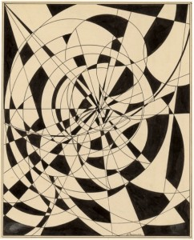</a></p>
<p><a rel="attachment wp-att-3337" href="http://computationalspaces.org/raeumliche-konstruktion /attachment/2013_hamburg_rod_graphics_02"></a>Das Bild ensteht von Kreisen und Linie. diese Elemente soll frei bewegen und haben wir uns am Ende entschieden, dass die Animation von Kreisen statisch und die Linie abhängig von Leute sein soll.</p>
<p>Wir haben das Skluptur auf Papier gebaut und dieses Skultur besteht aus verschiedene Layer bzw Stufen. Wenn man mit Projektor beleuchtet, gibt dann am ende eine ähnliche Effekt vom Schwarzfullen und Linie wie in das Rodtschenko-Bild</p>
<p><strong>Technische Umsetzung : </strong></p>
<p>Wir haben Processing für die Animation und Kinect + SimpleOpenNI für die Interaction benutzt.<br />
Das gesamte Projekt wurde in Java Programmiert. Kinect mit Simple OpenNI benutzen wir als library in das projekt<br />
Ausserdem benutzen wir auch in das Projekt das Maskingtools um Masking bilder für Animation-grenze und Positionen zu erzeugen</p>
<p>Als Animation haben wir Kreisen von 3 verschiedene Punkte, die immer vergroßt werden. jede punkt beinhaltet 5 Kreisen und hat verschiedene (zufällige) Anfang-Große.<br />
Wenn die Animation zusammen geführt werden, werden die Kreisen (Zufällige-)Schnitte bilden. Diese Schnit werden später mit Schwarzefüllung gefüllt.</p>
<p>Für das Algorithm beim Schwarzefüllung wie in Rodscthenkobild haben wir gleiche Alrgoithm wie in Floodfilling gesetzt. Nach dem Kreise Animation wird gesamte Animation zu Pixel-Bilder umgewandelt. Danach holt das Algorithm Statische-Punkte und mit diese Punkte prüft das Algortihm, ob die Umgebung von die Punkte bereits Schwarz sind, falls nicht dann seine Bereich Schwarz einfarben (und arbeiten das Program weiter in schleifen bis keine Punkt in Pixel-bereich Weiss ist)</p>
<p>Als Interaction benutzen wir Linie von Rodtschenko Bild. Das Linie entspricht Personen (und seine Position), die von dem Kinect erkannt werden . Das Interaction passiert nur beim links-rechts Bewegung  und das Linie wird nach jede 5 Sekunde neu (zufallig) generiert.</p>
<p><a rel="attachment wp-att-3330" href="http://computationalspaces.org/raeumliche-konstruktion /attachment/2013-06-21-19-22-51">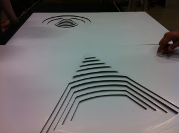</a></p>
<p><a rel="attachment wp-att-3331" href="http://computationalspaces.org/raeumliche-konstruktion /attachment/2013-06-21-19-23-20"></a></p>
<p><a rel="attachment wp-att-3329" href="http://computationalspaces.org/raeumliche-konstruktion /attachment/2013-06-21-18-55-54"></a></p>
<p><a rel="attachment wp-att-3332" href="http://computationalspaces.org/raeumliche-konstruktion /attachment/2013-06-21-19-23-38"></a></p>
<p><a rel="attachment wp-att-3333" href="http://computationalspaces.org/raeumliche-konstruktion /attachment/2013-06-21-19-24-06"></a></p>
<p><a rel="attachment wp-att-3334" href="http://computationalspaces.org/raeumliche-konstruktion /attachment/2013-08-03-11-03-54"></a></p>
<p><a rel="attachment wp-att-3335" href="http://computationalspaces.org/raeumliche-konstruktion /attachment/2013-08-03-11-43-15">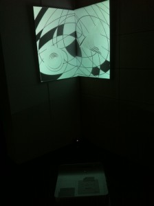</a></p>
<p><a rel="attachment wp-att-3335" href="http://computationalspaces.org/raeumliche-konstruktion /attachment/2013-08-03-11-43-15"></a><a rel="attachment wp-att-3336" href="http://computationalspaces.org/raeumliche-konstruktion /attachment/2013-08-03-11-43-29">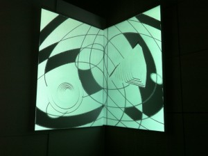</a></p>
]]></content:encoded>
			<wfw:commentRss>http://computationalspaces.org/raeumliche-konstruktion/feed/</wfw:commentRss>
		<slash:comments>0</slash:comments>
		</item>
		<item>
		<title>Spiral</title>
		<link>http://computationalspaces.org/raeumliche-konstruktion/</link>
		<comments>http://computationalspaces.org/raeumliche-konstruktion/#comments</comments>
		<pubDate>Tue, 20 Aug 2013 16:27:29 +0000</pubDate>
		<dc:creator><![CDATA[spiral]]></dc:creator>
				<category><![CDATA[räumliche konstruktion]]></category>

		<guid isPermaLink="false">http://computationalspaces.org/?p=3177</guid>
		<description><![CDATA[von Florian Huchthausen, Vasilis Ikonomou und Tobias Mainusch Abb. 1 Abb. 2 Abb. 3 Abb. 4 Abb. 5 Werdegang: Modelldesign Von Anfang an hatten wir die Idee eine aus mehreren einzelnen Teilen bestehende Skulptur zu verwenden. Die Teile sollten dabei als ganzes eine Art Kreis, bzw. Spirale bilden, wie in den Abb. 1-3 zu sehen. [&#8230;]]]></description>
				<content:encoded><![CDATA[<p>von Florian Huchthausen, Vasilis Ikonomou und Tobias Mainusch</p>
<p>Abb. 1</p>
<p><a rel="attachment wp-att-3191" href="http://computationalspaces.org/raeumliche-konstruktion /attachment/foto-am-14-04-2013-um-13-08-2"></a></p>
<p>Abb. 2</p>
<p><a rel="attachment wp-att-3191" href="http://computationalspaces.org/raeumliche-konstruktion /attachment/foto-am-14-04-2013-um-13-08-2"></a><a rel="attachment wp-att-3192" href="http://computationalspaces.org/raeumliche-konstruktion /attachment/foto-am-14-04-2013-um-13-08-3"></a></p>
<p>Abb. 3</p>
<p><a rel="attachment wp-att-3192" href="http://computationalspaces.org/raeumliche-konstruktion /attachment/foto-am-14-04-2013-um-13-08-3"></a><a rel="attachment wp-att-3193" href="http://computationalspaces.org/raeumliche-konstruktion /attachment/foto-am-14-04-2013-um-13-08-3-2"></a></p>
<p>Abb. 4</p>
<p><a rel="attachment wp-att-3225" href="http://computationalspaces.org/raeumliche-konstruktion /attachment/photo"></a></p>
<p>Abb. 5</p>
<p><a rel="attachment wp-att-3226" href="http://computationalspaces.org/raeumliche-konstruktion /attachment/imag0182"></a></p>
<p><strong>Werdegang:</strong></p>
<p><strong>Modelldesign<br />
</strong></p>
<p>Von Anfang an hatten wir die Idee eine aus mehreren einzelnen Teilen bestehende Skulptur zu verwenden. Die Teile sollten dabei als ganzes eine Art Kreis, bzw. Spirale bilden, wie in den Abb. 1-3 zu sehen. In den Abb. 4-5 ist unser vorläufiges Modell zu sehen. Abb. 4 zeigt den Mapping-Vorgang für die Maske und Abb. 5 unsere Projektion.</p>
<p>Unsere endgültige Skulptur soll um einiges größer werden (ca 1,50 &#8211; 2 Meter). Außerdem soll sie mehr kreis- bzw. spiralförmig aufgebaut sein.</p>
<p>Wir haben diverse Materialen als Projektionsebene getestet (Papier, Plexiglass, Alufolie) und sind zu dem Schluss gekommen zerknitterte Alufolie zu verwenden, da diese passende Reflexionseffekte hervorruft (Abb. 6).</p>
<p><strong>Projektionsdesign</strong></p>
<p>Zunächst wollten wir darauf dann ein Video projezieren auf dem bspw. eine Fahrradfahrt aus der Ego-Perspektive zu sehen ist. Wenn man dichter an die Skulptur herangeht, sollte sich das Video schneller abspielen bzw der Anschein erweckt werden, dass man sich auf dem Fahrrad schneller bewegt. Aufgrund von Performance-Schwierigkeiten bei der Live-Video-Manipulation mussten wir allerdings diese Idee verwerfen.</p>
<p>Jetzt verwenden wir eine spiralförmige Animation, die aus einzelnen Punkten besteht. Wenn man sich auf die Skulptur zu bewegt, kommt die Spirale auf einen zu (eine Art Zoom-Effekt) und die Drehgeschwindigkeit wird erhöht,. Damit soll das Gefühl erzeugt werden, als würde man in die Spirale hinein &#8220;gesaugt&#8221; werden.</p>
<p><strong>Technische Details</strong></p>
<p>Für die Umsetzung wurden die Bibliotheken von Processing und SimpleOpenNI verwendet; der gesamte Projektcode wurde in Java programmiert. Die verwendeten Bibliotheken ermöglichen die Verbindung zur Microsoft Kinect, mit der die Entfernung des Betrachters zur Skulptur anhand des Tiefenbildes der Kinect ermittelt wird.</p>
<p>Die erzeugte Animation besteht aus einer spiralförmigen Anordnung von weißen Kreisen, die abhängig von der zuvor ermittelten Entfernung des Betrachters rotiert sowie gezoomt wird. Das Programm bietet zusätzlich die Option, eine Sounddatei einzubinden und abzuspielen, die relativ zur berechneten Entfernung in ihrer Lautstärke modifiziert wird. Nähert sich der Betrachter dem Objekt, wird somit die Lautstärke erhöht, entfernt er sich andererseits, verringert sich diese.</p>
]]></content:encoded>
			<wfw:commentRss>http://computationalspaces.org/raeumliche-konstruktion/feed/</wfw:commentRss>
		<slash:comments>0</slash:comments>
		</item>
		<item>
		<title>Fraktale Transparenz</title>
		<link>http://computationalspaces.org/raeumliche-konstruktion/</link>
		<comments>http://computationalspaces.org/raeumliche-konstruktion/#comments</comments>
		<pubDate>Mon, 08 Jul 2013 12:10:08 +0000</pubDate>
		<dc:creator><![CDATA[fraktale]]></dc:creator>
				<category><![CDATA[räumliche konstruktion]]></category>

		<guid isPermaLink="false">http://computationalspaces.org/?p=3175</guid>
		<description><![CDATA[Technische Details Die Technische Umsetzung erfolgte mit Hilfe von Processing (processing.org) und SimpleOpenNI (openni.org) als Schnittstelle zur Microsoft Kinect. Das  Grunddreieck wird mit Hilfe von einfachen Linien gezeichnet und bleibt fix kann aber durch das Verändern der Höhen- und Breitenvariablen angepasst werden. Die Bewegung der Linien ist in einzelne Methoden ausgelagert und erfolgt in Abhängigkeit [&#8230;]]]></description>
				<content:encoded><![CDATA[<p><strong>Technische Details </strong><br />
<em>Die Technische Umsetzung erfolgte mit Hilfe von Processing (processing.org) und SimpleOpenNI (openni.org) als Schnittstelle zur Microsoft Kinect. Das  Grunddreieck wird mit Hilfe von einfachen Linien gezeichnet und bleibt fix kann aber durch das Verändern der Höhen- und Breitenvariablen angepasst werden. Die Bewegung der Linien ist in einzelne Methoden ausgelagert und erfolgt in Abhängigkeit von der mittleren Entfernung des Tiefenbildes, welches die Kinect liefert.</em></p>
<p><em> </em></p>
<p><em>Für die Ermittlung der Entfernung werden alle Pixel des Tiefenbildes, die die einzelnen Entfernungen beinhalten, aufsummiert und durch die Anzahl der Pixel geteilt. Es werden einzelne Methoden für bestimmte Bewegungen in Abhängigkeit von der mittleren Entfernung aufgerufen. Die gesamte Bewegung ist in 4 Teilbewegungen aufgeteilt, die jeweils der Reihe nach aufgerufen werden. Wenn eine Bewegung zu Ende ist, wird mit Hilfe von Flags die nächste Bewegung eingeleitet. </em></p>
<p><em> </em></p>
<p><em>Das Zeichnen der Linien und deren Bewegung erfolgt von/zu jeder Seite des Dreiecks von dem Mittelpunkt ausgehend. In jeder Bewegung sind sechs Linien beteiligt, die durch das Verändern deren X/Y Koordinaten manipuliert werden. Die Verfeinerung der Struktur erfolgt symmetrisch von der Mitte zu den Enden des Dreiecks, dabei werden nach dem gleichen Prinzip jeweils kleinere Dreiecke erstellt.</em></p>
]]></content:encoded>
			<wfw:commentRss>http://computationalspaces.org/raeumliche-konstruktion/feed/</wfw:commentRss>
		<slash:comments>0</slash:comments>
		</item>
		<item>
		<title>Surreale Kausalität</title>
		<link>http://computationalspaces.org/raeumliche-konstruktion/</link>
		<comments>http://computationalspaces.org/raeumliche-konstruktion/#comments</comments>
		<pubDate>Thu, 04 Jul 2013 18:49:01 +0000</pubDate>
		<dc:creator><![CDATA[kausalitaet]]></dc:creator>
				<category><![CDATA[räumliche konstruktion]]></category>

		<guid isPermaLink="false">http://computationalspaces.org/?p=3232</guid>
		<description><![CDATA[von Milena Dreier, Tobias Meurer und Christo Papanouskas Grundidee Die Idee ist es, dem Besucher die Möglichkeit zu geben, den Raum der ihn umgibt vollkommen neu zu gestalten. Durch die Reflektion von Licht auf verschiedenen Oberflächen bekommt man ein vollkommen anderes Raumgefühl. Man hat vor und um sich diesen surrealen und gewollt leblosen Raum, in [&#8230;]]]></description>
				<content:encoded><![CDATA[<p>von Milena Dreier, Tobias Meurer und Christo Papanouskas</p>
<h1>Grundidee</h1>
<p>Die Idee ist es, dem Besucher die Möglichkeit zu geben, den Raum der ihn umgibt vollkommen neu zu gestalten. Durch die Reflektion von Licht auf verschiedenen Oberflächen bekommt man ein vollkommen anderes Raumgefühl. Man hat vor und um sich diesen surrealen und gewollt leblosen Raum, in dessen Mitte dieser kubistische Monolith steht. Alles wartet nur darauf, durch Bewegung belebt zu werden.</p>
<h1>Konzept</h1>
<p>Wir haben ein System aus mehreren Kinects und Beamern, die einen Monolithen aus verschiedenen Materialien beleuchten. Die Farbflächen reagieren auf Bewegung und schaffen so ein eigenes Farb- und Formklima.<br />
Der Monolith ist ca. 2,50 Meter hoch und besteht aus einem Rohrgerüst. Die Flächen bestehen aus Papier.</p>
<h1>Technische Umsetzung</h1>
<p>Unser gesamtes Projekt ist mit Java 1.7 implementiert.<br />
Zur grafischen Darstellung verwenden wir die <a href="http://www.processing.org/" target="_blank">Processing</a> 2 Bibliothek. Die Ansteuerung der Kinect erfolgt mit Hilfe von <a href="https://code.google.com/p/simple-openni/" target="_blank">SimpleOpenNI</a>.</p>
<p>Die einzelnen Flächen des Monolithen können auf Code-Basis einzeln angesprochen werden, sodass jeder Fläche eine eigene Farbe zugewiesen werden kann. Das Programm setzt die Bewegungen des Benutzers in sich verändernde Farben um.</p>
<h1>Ausstellungen</h1>
<ul>
<li>03. August 2013, Bucerius Kunst Forum, <a href="http://www.buceriuskunstforum.de/veranstaltungen/tag-der-offenen-tuer/" target="_blank">Tag der offenen Tür &#8211; Typisch russisch!</a><br />
<a href="http://russland-heute.de/lifestyle/2013/08/07/innovative_kunst_rodtschenko_in_hamburg_25325.html" target="_blank">Innovative Kunst: Rodtschenko in Hamburg, Russland HEUTE</a></li>
<li>02. November 2013, HAW Hamburg (Berliner Tor 5, Foyer), <a href="http://nachtdeswissens.hamburg.de/" target="_blank">5. Nacht des Wissens</a></li>
</ul>
<h1>Impressionen</h1>

<a href='http://computationalspaces.org/raeumliche-konstruktion/attachment/3dmodell1/'></a>
<a href='http://computationalspaces.org/raeumliche-konstruktion/attachment/3dmosdell2/'></a>
<a href='http://computationalspaces.org/raeumliche-konstruktion/attachment/foto-2/'></a>
<a href='http://computationalspaces.org/raeumliche-konstruktion/attachment/prototypprojektion/'></a>
<a href='http://computationalspaces.org/raeumliche-konstruktion/attachment/projektionmonitor/'></a>
<a href='http://computationalspaces.org/raeumliche-konstruktion/attachment/img_2942/'></a>

]]></content:encoded>
			<wfw:commentRss>http://computationalspaces.org/raeumliche-konstruktion/feed/</wfw:commentRss>
		<slash:comments>0</slash:comments>
		</item>
		<item>
		<title>Ottavia</title>
		<link>http://computationalspaces.org/reaktive-fragmente/</link>
		<comments>http://computationalspaces.org/reaktive-fragmente/#comments</comments>
		<pubDate>Mon, 06 May 2013 16:32:56 +0000</pubDate>
		<dc:creator><![CDATA[ottavia]]></dc:creator>
				<category><![CDATA[reaktive fragmente]]></category>

		<guid isPermaLink="false">http://computationalspaces.org/?p=2682</guid>
		<description><![CDATA[von Newid Rahimi, Florian Moser, Florian Huchthausen Die Konzeption unseres Projektes bezieht sich auf die Geschichte der Stadt Ottavia, eine der fragilen Städte. Die Idee ist aus verschiedensten Pyramiden, welche aus Papier gebaut werden, eine Struktur zu erzeugen. Das durch die zusammengefügten Pyramiden entstehende Netz von Kanten wird durch einen Beamer nachgezeichnet und die daraus [&#8230;]]]></description>
				<content:encoded><![CDATA[<p>von Newid Rahimi, Florian Moser, Florian Huchthausen</p>
<p><a rel="attachment wp-att-3200" href="http://computationalspaces.org/reaktive-fragmente /attachment/p1100021-2"></a></p>
<p style="text-align: left">Die Konzeption unseres Projektes bezieht sich auf die Geschichte der Stadt Ottavia, eine der fragilen Städte. Die Idee ist aus verschiedensten Pyramiden, welche aus Papier gebaut werden, eine Struktur zu erzeugen. Das durch die zusammengefügten Pyramiden entstehende Netz von Kanten wird durch einen Beamer nachgezeichnet und die daraus resultierenden Flächen werden ebenfalls mittels Projektion farbig gefüllt.</p>
<p style="text-align: left">
<p style="text-align: left"><a rel="attachment wp-att-3210" href="http://computationalspaces.org/reaktive-fragmente /attachment/ottavia020">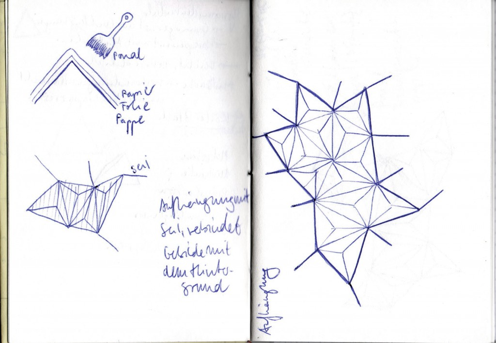</a></p>
<p style="text-align: left">
<p style="text-align: left">Als Gerüst für die Formen werden verschiedene Pyramiden aus Pappe angefertigt. Durch diese Technik werden die Pyramiden nach dem Austrocknen des Leims stabil und robust, wirken jedoch durch die Beschaffenheit des Materials leicht und fragil. Die fertigen Einzelteile werden von ihrem Pappgerüst gelöst und mittels Klebeband zusammengefügt.</p>
<p style="text-align: left">
<p style="text-align: left"><a rel="attachment wp-att-3211" href="http://computationalspaces.org/reaktive-fragmente /attachment/p1100003"></a></p>
<p style="text-align: left">
<p style="text-align: left"><a rel="attachment wp-att-3215" href="http://computationalspaces.org/reaktive-fragmente /attachment/p1100016"></a></p>
<p style="text-align: left">
<p style="text-align: left">Die Interaktion mit dem Besucher findet durch die Verwendung einer Kinect statt. Der Besucher kann durch diese Technik an den Konturen ziehen, die die physischen Eigenschaften von Gummibändern besitzen. Durch unterschiedliche Geschwindigkeiten der Armbewegung erfolgt ein dementsprechend starker Zug an der Kontur. Auch die angrenzenden Flächen reagieren auf die Bewegung durch Farbveränderung.</p>
<p style="text-align: left">
<p style="text-align: left"><a rel="attachment wp-att-3212" href="http://computationalspaces.org/reaktive-fragmente /attachment/ottavia_4">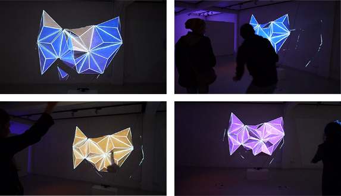</a></p>
<p style="text-align: left">
<p style="text-align: left">
<p style="text-align: left">
<p style="text-align: left">
<p style="text-align: left">
<p style="text-align: left">
<p style="text-align: left">
<p style="text-align: left">
<p style="text-align: left">
]]></content:encoded>
			<wfw:commentRss>http://computationalspaces.org/reaktive-fragmente/feed/</wfw:commentRss>
		<slash:comments>0</slash:comments>
		</item>
		<item>
		<title>Zirma</title>
		<link>http://computationalspaces.org/reaktive-fragmente/</link>
		<comments>http://computationalspaces.org/reaktive-fragmente/#comments</comments>
		<pubDate>Wed, 27 Mar 2013 00:52:51 +0000</pubDate>
		<dc:creator><![CDATA[zirma]]></dc:creator>
				<category><![CDATA[reaktive fragmente]]></category>

		<guid isPermaLink="false">http://computationalspaces.org/?p=2679</guid>
		<description><![CDATA[Ein &#8220;City Trip&#8221;. Von Joa Middelkoop, Marieke Linssen und Michael Zajonz Kurzbeschreibung und Motivation Eine Stadt, deren Existenz nur der Wiederholung einzelner, erinnerter Fragmente entspringt. Inspiriert ist diese Installation von dem Buch &#8220;Die unsichtbaren Städte&#8221; des Autoren Italo Calvino, ganz konkret von der dort beschriebenen Stadt &#8220;Zirma&#8221;. Eine konturarme Fläche erwacht zum Leben, sobald man [&#8230;]]]></description>
				<content:encoded><![CDATA[<p>Ein &#8220;City Trip&#8221;.<br />
Von Joa Middelkoop, Marieke Linssen und Michael Zajonz</p>
<h4>Kurzbeschreibung und Motivation</h4>
<p>Eine Stadt, deren Existenz nur der Wiederholung einzelner, erinnerter Fragmente entspringt.</p>
<p>Inspiriert ist diese Installation von dem Buch &#8220;Die unsichtbaren Städte&#8221; des Autoren Italo Calvino, ganz konkret von der dort beschriebenen Stadt &#8220;Zirma&#8221;.</p>
<p>Eine konturarme Fläche erwacht zum Leben, sobald man sich ihr nähert und sie von einem zehren kann. Die gleichförmigen Elemente bilden einen reichen Nährboden für alles, was die Stadt ihrem Besucher entlockt, sie wächst zu einem bizarren Geflecht, welches auf eine eigeneartige Weise doch anziehend wirkt.</p>
<p>In Zirma geht es um Wiederholung dessen, was der Besucher hineinträgt. Deshalb bildet eine Fläche aus 10 gleichen Sechsecken die Grundlage dieser Installation. Auf einer Holzunterlage, mit Schaumstoff aufgepolstert und mit weißem Tuch bespannt findet die Projektion statt.</p>
<p>Die Projektion besteht im wesentlichen aus Kaleidoskop-Effekten, die die ihnen zur Verfügung gestellten Inhalte vervielfältigen und abstrahieren. Sie kann durch den Kinect-Sensor mittels Gesten beeinflusst werden, wie z.B. dem Heben der Hand oder einem Box-ähnlichen Ausstrecken und wieder Heranziehen einer Hand. Ein Laptop wertet zugehörige Sensor-Daten aus, berechnet den Kaleidoskop-Effekt und nimmt entsprechende Anpassungen an der Projektion vor:</p>
<p>Was die Stadt ist, bestimmt ihr Besucher – nur sollte er nicht glauben, er könne sie kontrollieren.</p>
<h4>Projektionsfläche</h4>
<div id="attachment_3001" style="width: 310px" class="wp-caption aligncenter"><a rel="attachment wp-att-3001" href="http://computationalspaces.org/reaktivefragmente /attachment/_dsc00268">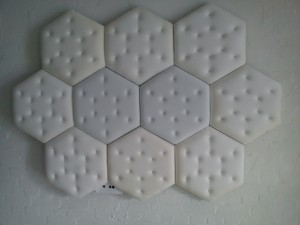</a><p class="wp-caption-text">Draufsicht der Projektionsfläche</p></div>
<p>Die Projektionsfläche erinnert an die Wände einer Gummizelle. Zirma ist ein komische Stadt, jedoch kaum zum Lachen komisch. Sie verstört, kann einen Wahnsinnig machen.</p>
<p>Wie weiter oben bereits erwähnt handelt es sich bei der Projektionsfläche um zehn gleiche Sechsecke. Ihre Grundlage bilden Holzplatten, auf einer Seite mit Schaumstoff aufgepolstert und einem weißen Tuch bespannt. Durch das Einarbeiten kleiner Knöpfe auf der gepolsterten Seite entsteht eine Kissen-Optik, die an die Wände einer Gummizelle erinnert.</p>
<p style="text-align: center">
<div id="attachment_3093" style="width: 310px" class="wp-caption aligncenter"><a rel="attachment wp-att-3093" href="http://computationalspaces.org/reaktivefragmente /attachment/dsc_1795">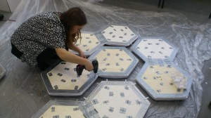</a><p class="wp-caption-text">Verschraubung</p></div>
<p>Auf der Rückseite sind die Sechsecke miteinander verschraubt, die Gesamtkonstruktion wird durch einige Holzlatten stabilisiert. Aufgehängt wird die Installation an zwei Transparenten Schnüren, die an der Rückseite der Holzplatten eingehakt werden.</p>
<h4>Projektion</h4>
<p><a rel="attachment wp-att-3002" href="http://computationalspaces.org/reaktivefragmente /attachment/_dsc00275">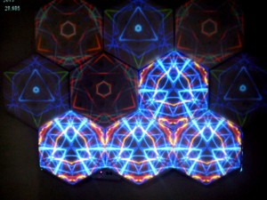</a></p>
<p>Die Interaktion mit der Projektion geschieht mittels einer Microsoft Kinect-Kamera. Sie erkennt die Anzahl der Personen, die sich vor der Projektionsfläche aufhalten und ihre Bewegungen. Hierzu gibt es eine Entfernungsbeschränkung, bis zu der hin Personen beachtet werden, um das Verhalten der Projektion örtlichen Gegebenheiten anpassen zu können.</p>
<p>Nach Aufbau der Installation muss die Projektion zunächst kalibriert werden. Dabei wird mittels Keystone-/Trapez-Korrektur zum einenen eine leichte Schräge der aufgehängten Installation und zum anderen die Neigung des Projektors kompensiert. Außerdem können die 10 einzelnen Teil-Projektionen für die Kaleidoskope unabhängig voneinander verschoben werden um ein genaueres Mapping zu ermöglichen.</p>
<p><a rel="attachment wp-att-3003" href="http://computationalspaces.org/reaktivefragmente /attachment/_dsc00279"></a></p>
<p>Befindet sich keine Person in der Nähe der Installation, verhält sie sich relativ unauffällig. Es flackern hin und wieder einzelne Sechsecke auf, ähnlich wie eine flackernde Neon-Lampe. Nähert sich eine Person der Installation, wird ein Kaleidoskop erzeugt. Die Kaleidoskope, die erzeugt werden, wenn sich Personen nähern, werden zufällig auf die einzelnen Sechsecke der Projektionsfläche verteilt, so dass sie vollständig ausgeleuchtet wird. Befinden sich z.B. drie Personen in der Nähe der Installation, so werden drei verschiedene Kaleidoskop-Projektionen zufällig auf die Sechsecke verteilt (dabei können sie also auch mehrfach auftauchen).</p>
<p>Das Kaleidoskop verwendet ein beliebiges Eingabebild zur Berechnung des Effekts, das Zentrum wird bei Erkennung einer Person immer Zufällig ausgewählt. Mit verschiedenen Gesten kann Einfluss auf die Projektion genommen werden, so dass die den jeweigen Personen zugeordneten Kaleidoskope ihre Plätze tauschen oder mit anderen Farben eingetönt werden.</p>
<p>Wie das alles am Ende ungefähr aussehen kann, entnimmt man am besten einem Video &#8212; oder man probiert es bei Gelegenheit aus. Es bleibt zu hoffen, dass hier bald noch Video-Material höherer Qualität erscheint.</p>
<p><a href="https://vimeo.com/62744203">Hier klicken um zum Video zu gelangen</a></p>
<p>.</p>
]]></content:encoded>
			<wfw:commentRss>http://computationalspaces.org/reaktive-fragmente/feed/</wfw:commentRss>
		<slash:comments>0</slash:comments>
		</item>
		<item>
		<title>Armilla oder die Stadt ohne Mauern</title>
		<link>http://computationalspaces.org/reaktive-fragmente/</link>
		<comments>http://computationalspaces.org/reaktive-fragmente/#comments</comments>
		<pubDate>Tue, 26 Mar 2013 12:04:52 +0000</pubDate>
		<dc:creator><![CDATA[armilla]]></dc:creator>
				<category><![CDATA[reaktive fragmente]]></category>

		<guid isPermaLink="false">http://computationalspaces.org/?p=2675</guid>
		<description><![CDATA[Lichtpunkte &#124; Prof. Hübler, Prof. Klemke, Prof. Wendholt &#124; WS 2012/2013 &#124; Sebastian Bartels &#124; Fabian Greve &#124; Sören Koswig &#124; Anton Romanov &#124; Konzept Die konzeptionelle Grundlage der interaktiven Installation Armilla entspringt einer Geschichte von Italo Calvino mit dem Titel “Die fragilen Städte 3: Armilla”. Besonders interessiert uns an dieser Geschichte die Idee, etwas [&#8230;]]]></description>
				<content:encoded><![CDATA[<p>Lichtpunkte  |  Prof.  Hübler, Prof. Klemke, Prof. Wendholt  |   WS 2012/2013   |   Sebastian Bartels   |   Fabian Greve   |   Sören Koswig   |   Anton Romanov   |</p>
<p><a rel="attachment wp-att-3063" href="http://computationalspaces.org/reaktivefragmente /attachment/armilla_aufbau"></a></p>
<p dir="ltr">
<p dir="ltr">
<p dir="ltr">
<p dir="ltr">
<p dir="ltr">
<p dir="ltr">
<p dir="ltr">
<p dir="ltr">
<p dir="ltr">
<p dir="ltr">
<p dir="ltr">
<p dir="ltr">
<p dir="ltr">
<h2>Konzept</h2>
<p dir="ltr">Die  konzeptionelle Grundlage der interaktiven Installation Armilla entspringt  einer Geschichte von Italo Calvino mit dem Titel “Die fragilen Städte 3:  Armilla”. Besonders interessiert uns an dieser Geschichte die Idee, etwas unter einer Oberfläche verborgenes offen zu legen. So wie der  Autor dem Leser durch seine Erzählung die Möglichkeit gibt die Stadt  ohne die Hülle der Wände wahrzunehmen, und darunter die Rohrleitungen  gleich eines Adernetzes der Stadt sichtbar werden zu lassen, wollen wir dem Betrachter die Möglichkeit geben, durch seine physische Präsenz  unter die Oberfläche zu schauen und einen Raum zum Forschen und  Entdecken schaffen. Die Installation lädt ein, betrachtet zu werden,  ohne direkt ihre Funktion zu offenbaren.</p>
<p dir="ltr"><strong><br />
</strong></p>
<p dir="ltr">
<div id="attachment_3121" style="width: 310px" class="wp-caption alignleft"><a rel="attachment wp-att-3121" href="http://computationalspaces.org/reaktivefragmente /attachment/armilla_halbverdeckt-4"></a><p class="wp-caption-text">Freilegung einer verdeckten Ebene durch den Schatten des Betrachters</p></div>
<div id="attachment_3125" style="width: 310px" class="wp-caption alignleft"><a rel="attachment wp-att-3125" href="http://computationalspaces.org/reaktivefragmente /attachment/armilla_verdeckt-4">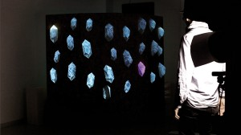</a><p class="wp-caption-text">komplette Freilegung der Körper durch den Schattenwurf des Betrachters</p></div>
<h2></h2>
<h2></h2>
<h2></h2>
<h2></h2>
<h2></h2>
<h2></h2>
<h2></h2>
<h2></h2>
<h2></h2>
<h2></h2>
<h2></h2>
<h2></h2>
<h2></h2>
<h2></h2>
<h2></h2>
<h2></h2>
<h2>Idee</h2>
<p dir="ltr">Die Grundidee, aus der sich Armilla entwickelt hat, ist das Prinzip der Freilegung eines Körpers. Daraus entwickelte sich der Gedanke, dass dies durch den Schatten des Betrachters geschehen könnte. Dafür koppeln wir einen digitalen Schatten der Kinect an einen real vorhandenen, der durch eine Lichtquelle vor der Stellwand erzeugt wird.</p>
<p dir="ltr"><strong><br />
</strong></p>
<p dir="ltr">
<div id="attachment_3066" style="width: 310px" class="wp-caption alignleft"><a rel="attachment wp-att-3066" href="http://computationalspaces.org/reaktivefragmente /attachment/armilla_skizze_freilegung"></a><p class="wp-caption-text">Skizze zum Freilegungsprinzip</p></div>
<h2></h2>
<h2></h2>
<h2></h2>
<h2></h2>
<h2></h2>
<h2></h2>
<h2></h2>
<h2></h2>
<h2></h2>
<h2>Zur Funktion</h2>
<p dir="ltr">Armilla funktioniert mit einem Beamer, der versteckt hinter einer Stellwand steht und in einer Wand eingelassene transparente Objekte von hinten bestrahlt. Der Betrachter sieht sich einem Objekt gegenübergestellt, das auf den ersten Blick sehr massiv und statisch wirkt. Es wirkt als würden organische Wucherungen aus dem Objekt wachsen. Durch den Schatten aufgedeckt wird ihr wuchern sichtbar. Zeitweise zittern die Objekte, schwanken und wechseln ihre Farbe scheinbar wahllos. Beim Blick hinter das Objekt zerfällt der Schein, und der massive Eindruck weicht dem einer provisorischen Attrappe.Von vorne kommt im gleichen Winkel und Höhe wie der Beamer eine Lichtquelle (Baustrahler) und die Kinect, die dafür sorgt, dass der reale Schatten des Betrachters an den auf der anderen Seite geworfenen digitalen Schatten gekoppelt ist. Dieser wirkt wie eine Maske, welche die Erste von 2 übereinander liegenden Ebenen aufdeckt, und ein darunter laufendes Video<br />
zum Vorschein bringt. Um eine Varianz der einzelnen Körper zu erreichen haben wir eine Sequenz mit unterschiedlichen Bildteilbereichen angelegt.</p>
<p dir="ltr"><strong><br />
</strong></p>
<p dir="ltr">
<div id="attachment_3130" style="width: 310px" class="wp-caption alignleft"><a rel="attachment wp-att-3130" href="http://computationalspaces.org/reaktivefragmente /attachment/armilla_mapping"></a><p class="wp-caption-text">Aftereffektsequenz mit variierenden Teilbereichen</p></div>
<div id="attachment_3081" style="width: 310px" class="wp-caption alignleft"><a rel="attachment wp-att-3081" href="http://computationalspaces.org/reaktivefragmente /attachment/armilla_detail-3"></a><p class="wp-caption-text">halbtransparente Körper aus Konstruktionspapier</p></div>
<div id="attachment_3082" style="width: 310px" class="wp-caption alignleft"><a rel="attachment wp-att-3082" href="http://computationalspaces.org/reaktivefragmente /attachment/armilla_ruckwand"></a><p class="wp-caption-text">Stellwandkonstruktion Rückseite</p></div>
<h2></h2>
<h2></h2>
<h2></h2>
<h2></h2>
<h2></h2>
<h2></h2>
<h2></h2>
<h2></h2>
<h2></h2>
<h2></h2>
<h2></h2>
<h2></h2>
<h2></h2>
<h2></h2>
<h2></h2>
<h2></h2>
<h2></h2>
<h2></h2>
<h2></h2>
<h2>Zur Technik</h2>
<p dir="ltr">Die Installation besteht neben der Stellwand mit den halbtransparenten Körpern aus einem Nahbereichsbeamer, einer Lichtquelle, einer Kinect und einem Rechner, auf dem ein in Processing programmiertes Java-Programm läuft, welches mithilfe von OpenNI das Bild der Kinect ausliest und über ein Video legt, welches mit der GSVideo-Bibliothek abgespielt wird. Die Lichtquelle dient dabei lediglich zur Verdeutlichung des Effektes, also um den physikalischen Schatten des Betrachters deutlich zu machen.</p>
<p dir="ltr"><strong><br />
</strong></p>
<p dir="ltr">
<p dir="ltr">
<p dir="ltr">
]]></content:encoded>
			<wfw:commentRss>http://computationalspaces.org/reaktive-fragmente/feed/</wfw:commentRss>
		<slash:comments>0</slash:comments>
		</item>
		<item>
		<title>Valdrada oder die spiegelnde Stadt</title>
		<link>http://computationalspaces.org/reaktive-fragmente/</link>
		<comments>http://computationalspaces.org/reaktive-fragmente/#comments</comments>
		<pubDate>Wed, 06 Mar 2013 18:34:25 +0000</pubDate>
		<dc:creator><![CDATA[valdrada]]></dc:creator>
				<category><![CDATA[reaktive fragmente]]></category>

		<guid isPermaLink="false">http://computationalspaces.org/?p=2677</guid>
		<description><![CDATA[von Julia Krüger, Melissa Wuttke und Lukas Grundmann Motivation und Konzept Die Stadt Valdrada liegt um einen großen ruhigen See. Dieser spiegelt sowohl die Stadt als auch die Bewohner. Keine Handlung der Bewohner bleibt dabei verborgen,  sondern wird vom See wiedergegeben. Dabei ist wichtig zu beachten, dass die Spiegelung die Realität gerne ins Gegenteil verkehrt. [&#8230;]]]></description>
				<content:encoded><![CDATA[<p><em>von Julia Krüger, Melissa Wuttke und Lukas Grundmann</em></p>
<p><em><br />
</em></p>
<p><strong>Motivation und Konzept</strong></p>
<p>Die Stadt Valdrada liegt um einen großen ruhigen See. Dieser spiegelt sowohl die Stadt als auch die Bewohner. Keine Handlung der Bewohner bleibt dabei verborgen,  sondern wird vom See wiedergegeben. Dabei ist wichtig zu beachten, dass die Spiegelung die Realität gerne ins Gegenteil verkehrt. So erscheinen wichtige Tatsachen unwichtig und umgekehrt.</p>
<p>Ziel der Arbeit ist es nun sich auf diesen &#8220;besonderen Spiegel&#8221; Valdradas zu beziehen. Die Kernidee besteht darin mit natürlichen / physikalischen Spiegeln zu arbeiten und mit Virtuellen. Während die physikalischen Spiegel den Betrachter unverändert wiedergeben, sollen die virtuellen Spiegel den Betrachter und seine Bewegungen manipuliert wiedergeben.</p>
<p><strong>Umsetzung</strong></p>
<p>Der Einsatz von physikalischen Spiegeln erweist sich im abgedunkelten Vorstellungsraum als schwierig. So fällt kaum vom Betrachter reflektiertes Licht auf die Spiegel. Aber stattdessen streuen sie das Licht des Beamers an die Wände, was interessante Lichtmuster an Wänden und Boden erzeugt.</p>
<p>Die virtuellen Spiegel werden durch PC, Beamer und dem Microsoft Kinect Kamerasystem realisiert.</p>
<p>Es gibt sechzehn virtuelle Spiegel, welche in einer einfachen 3D Szene angeordnet sind. Die Grundfläche sind zwei unterschiedlich große gleichmäßige Achtecke, die beide ineinander verschachtelt sind. Die Spiegel selber sind rechteckig und stehen vertikal auf den Kanten der Achtecke.</p>
<p>Jeder erfasster Betrachter wird von seinem Hintergrund getrennt und dann auf den virtuellen Spiegeln wiedergegeben. Alle Spiegel haben einen fast transparenten einfarbigen Hintergrund. Dabei ist die Farbe ganz unterschiedlich. Durch unterschiedliche Farbfilter treten die durch die Kamera erfassten Rot, Grün und Blau Werte des &#8220;gespiegelten&#8221; Betrachters in den Hintergrund und die Person nimmt eine bestimmte Farbe an. Dabei ist diese Vordergrundfarbe die hellere Komplementärfarbe  zur Hintergrundfarbe. Dadurch wird die Kontur der wiedergegebenen Person hervorgehoben.</p>
<p>Die Kontur wird dabei in die Mitte des Spiegels verschoben. Letztendlich wird sie je nach Spiegel unterschiedlich stark horizontal verzerrt.</p>
<p>Jeder Spiegel gibt eine Person wieder. Bei mehreren Personen werden diese gleichmäßig auf die 16 Spiegel verteilt.</p>
<div id="attachment_2917" style="width: 310px" class="wp-caption alignnone"><a rel="attachment wp-att-2917" href="http://computationalspaces.org/city-talks /attachment/bildschirmfoto-vom-2013-03-06-030101">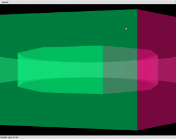</a><p class="wp-caption-text">3D Szenerie ohne erfassten Betrachter</p></div>
<div id="attachment_2923" style="width: 310px" class="wp-caption alignnone"><a rel="attachment wp-att-2923" href="http://computationalspaces.org/city-talks /attachment/bildschirmfoto-vom-2013-03-06-030614-2"></a><p class="wp-caption-text">Virtueller Spiegel ohne Verzerrung</p></div>
<div id="attachment_2925" style="width: 310px" class="wp-caption alignnone"><a rel="attachment wp-att-2925" href="http://computationalspaces.org/city-talks /attachment/bildschirmfoto-vom-2013-03-06-030523-2"></a><p class="wp-caption-text">verzerrender Spiegel</p></div>
<div id="attachment_2965" style="width: 624px" class="wp-caption alignnone"><a rel="attachment wp-att-2965" href="http://computationalspaces.org/city-talks /attachment/dsc_0341">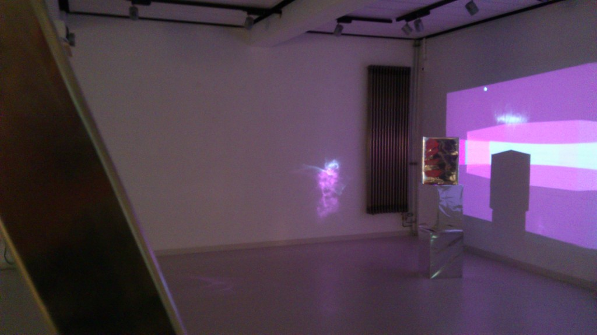</a><p class="wp-caption-text">Lichtmuster an Wänden und Boden</p></div>
<div id="attachment_2964" style="width: 624px" class="wp-caption alignnone"><a rel="attachment wp-att-2964" href="http://computationalspaces.org/city-talks /attachment/dsc_0332"></a><p class="wp-caption-text">Aufbau bei der Ausstellung</p></div>
<p><strong>Technische Details der Umsetzung</strong></p>
<p>Die Microsoft Kinect wird über OpenNI angesprochen, während die graphische Ausgabe unter Verwendung der Processing Java Bibliotheken erfolgt.</p>
<p>Der Java Code des Projekts lässt OpenNI die einzelnen RGB Bildpunkte den einzelnen Betrachtern zuordnen und kopiert danach die Bilddaten jeder Person in einen eigenen Bildpuffer. Diese Bildpuffer werden dann für die einzelnen virtuellen Spiegelflächen als OpenGL Texturen verwendet.</p>
<p>Verzerr- und Farbfilter laufen auf den Shadereinheiten der Grafikkarte ab. Das erlaubt (bei Verwendung aktueller Rechner), dass stets alle virtuelle Spiegel bei ordentlicher Framerate gerendert werden können.</p>
]]></content:encoded>
			<wfw:commentRss>http://computationalspaces.org/reaktive-fragmente/feed/</wfw:commentRss>
		<slash:comments>0</slash:comments>
		</item>
		<item>
		<title>Despina</title>
		<link>http://computationalspaces.org/reaktive-fragmente/</link>
		<comments>http://computationalspaces.org/reaktive-fragmente/#comments</comments>
		<pubDate>Tue, 05 Mar 2013 09:19:31 +0000</pubDate>
		<dc:creator><![CDATA[despina]]></dc:creator>
				<category><![CDATA[reaktive fragmente]]></category>

		<guid isPermaLink="false">http://computationalspaces.org/?p=2669</guid>
		<description><![CDATA[von Christian Blank, Vassili Ekoutsidis, Max Byszio &#38; Bengt Ott Einleitung Die unsichtbaren Städte (ital. Original: Le città invisibili) ist der Titel eines 1972 erschienenen Buches von Italo Calvino. Es besteht aus 55 kurzen Texten. Jeder der 55 Texte skizziert mit knappen Worten eine dieser (fiktiven) Städte, die jeweils eine bestimmte geographische, historische, gesellschaftliche oder [&#8230;]]]></description>
				<content:encoded><![CDATA[<div>
<p>von Christian Blank, Vassili Ekoutsidis, Max Byszio &amp; Bengt Ott</p>
</div>
<div>
<p><a rel="attachment wp-att-2804" href="http://computationalspaces.org/reaktivefragmente /attachment/boombox4">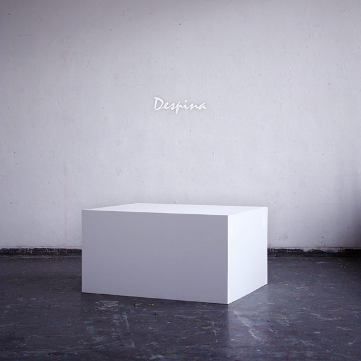</a></p>
<h4>Einleitung</h4>
<p>Die unsichtbaren Städte (ital. Original: Le città invisibili) ist der Titel eines 1972 erschienenen Buches von Italo Calvino. Es besteht aus 55 kurzen Texten. Jeder der 55 Texte skizziert mit knappen Worten eine dieser (fiktiven) Städte, die jeweils eine bestimmte geographische, historische, gesellschaftliche oder allgemein menschliche Situation in ein poetisches Bild fassen und jede mit einem Frauennamen benannt sind.</p>
<p><a rel="attachment wp-att-2816" href="http://computationalspaces.org/reaktivefragmente /attachment/kurzgeschichte">Kurzgeschichte &#8211; Despina</a></p>
<h4>Konzept</h4>
<p>Jede Stadt empfängt ihre Form von der Wüste, der sie sich entgegenstellt. Und so sehen der Kamelreiter und der Seemann Despina, die Stadt auf der Grenze zwischen 2 Wüsten. Denn von zwei Seiten erreicht man diese Stadt, mit dem Wüstenschiff von der einen und mit dem Segelschiff von der anderen. Diese zwei Elemente greifen wir in unserer Arbeit auf und simulieren Wasser und Wüste durch einen gespannten, elastischen Stoff, dessen Oberfläche eigenständig reagiert. Mehrere Fäden ziehen den Stoff an verschiedenen Stelllen punktuell herunter und ahmen die Wasserwüste nach. Die Reflexe sind das Echo der Stadt, die Umgebungsgeräusche werden über ein Großmembranmikrofon aufgenommen und von unserem Objekt wiedergegeben.</p>
<h4>Demonstration</h4>
<p><a href="http://youtu.be/h86IEge37s4">Despina Demo</a></p>
<h4>Konstruktion</h4>
<p><a rel="attachment wp-att-2796" href="http://computationalspaces.org/reaktivefragmente /attachment/1-2">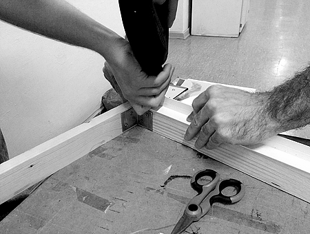</a></p>
<p><a rel="attachment wp-att-2797" href="http://computationalspaces.org/reaktivefragmente /attachment/2-2"></a></p>
<p><a rel="attachment wp-att-2798" href="http://computationalspaces.org/reaktivefragmente /attachment/3-2"></a></p>
<p><a rel="attachment wp-att-2799" href="http://computationalspaces.org/reaktivefragmente /attachment/4-2">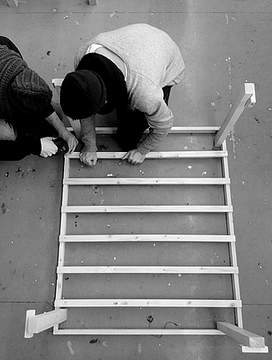</a></p>
<p><a rel="attachment wp-att-2807" href="http://computationalspaces.org/reaktivefragmente /attachment/5-2">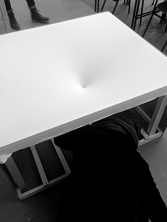</a></p>
<p><a rel="attachment wp-att-2808" href="http://computationalspaces.org/reaktivefragmente /attachment/6-2">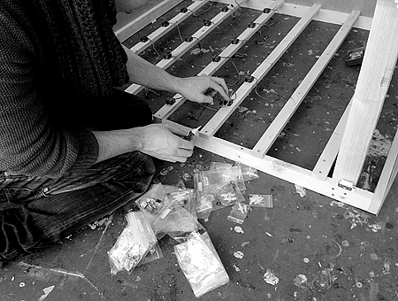</a></p>
<p><a rel="attachment wp-att-2833" href="http://computationalspaces.org/reaktivefragmente /attachment/10"></a></p>
<p><a rel="attachment wp-att-2809" href="http://computationalspaces.org/reaktivefragmente /attachment/7-2"></a></p>
<p><a rel="attachment wp-att-2810" href="http://computationalspaces.org/reaktivefragmente /attachment/8-2"></a></p>
<p><a rel="attachment wp-att-2811" href="http://computationalspaces.org/reaktivefragmente /attachment/9-2"></a></p>
<h4>Technik</h4>
<p>Die aufgenommenen Schallwellen werden mittels einer Fast-Fourier-Transformation quantifiziert und anschließend mittels einem selbst entwickelten Protokoll über die serielle Schnittstelle an ein Aduino MEGA weitergeleitet.</p>
<p>Das Arduino-Board ist über die digitalen Ausgänge mit den Servos verbunden und kann jeden Servo einzeln ansprechen. Für die Stromversorgung wurde ein Kabelbaum angefertigt, der alle Servos mit einer externen Stromquelle verbindet.</p>
<p><a rel="attachment wp-att-2884" href="http://computationalspaces.org/reaktivefragmente /attachment/cimg3831_edit">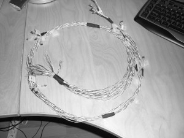</a></p>
<p>Das Arduino-Board wertet die empfangen Daten aus und steuert nacheinander die gewünschten Servos an.</p>
</div>
]]></content:encoded>
			<wfw:commentRss>http://computationalspaces.org/reaktive-fragmente/feed/</wfw:commentRss>
		<slash:comments>0</slash:comments>
		</item>
	</channel>
</rss>
